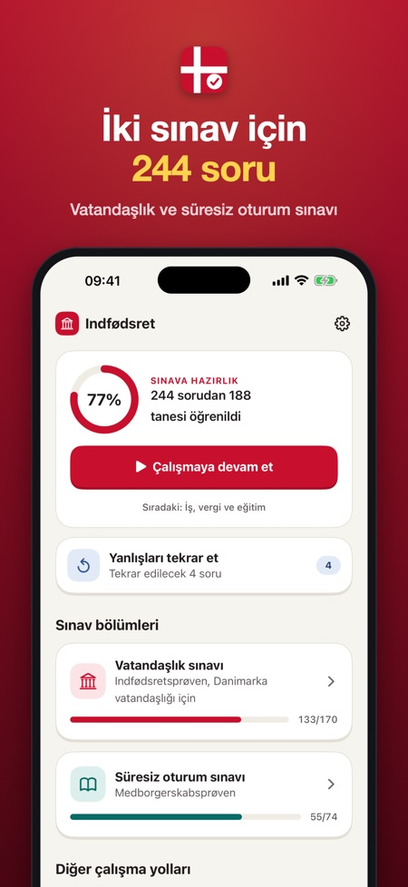
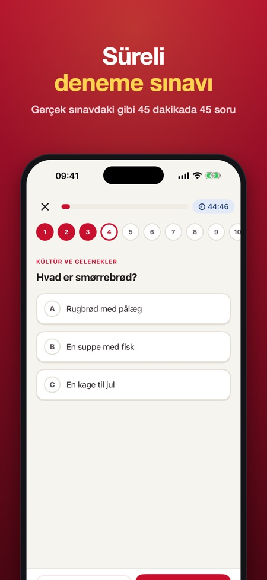
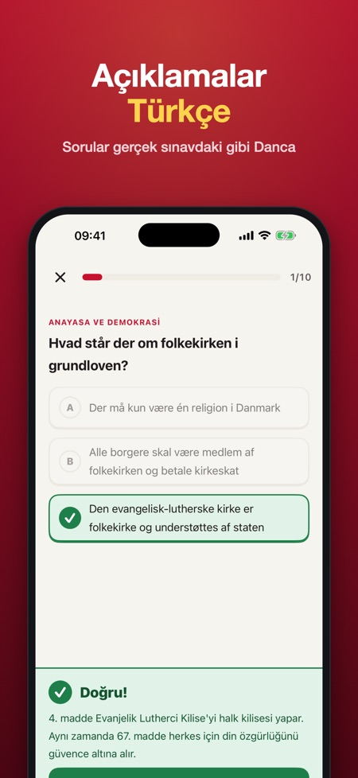

Indfødsret ve oturum sınavı. İki Danimarka sınavı için 244 alıştırma sorusu. Sorular Danca, açıklamalar Türkçe. Süreli deneme sınavları ve 5 değer sorusundan 4 kuralı.



Danimarka vatandaşlık sınavına (indfødsretsprøven) ve süresiz oturum sınavına (medborgerskabsprøven) 244 soruyla hazırlan. Tek seferlik ödeme, abonelik yok.
SORULAR DANCA, AÇIKLAMALAR TÜRKÇE
Gerçek sınavdaki gibi tüm sorular Dancadır. Her cevaptan sonra neden doğru ya da yanlış olduğunu Türkçe okursun (istersen Danca, İngilizce, Almanca, Lehçe veya Arapça). Böylece hem dili hem bilgileri aynı anda öğrenirsin.
İÇİNDE NELER VAR
• Vatandaşlık sınavı: Danimarka tarihi, anayasa ve demokrasi, refah ve toplum, kültür ve gelenekler, coğrafya ve dünyada Danimarka konularında 148 soru
• Vatandaşlık sınavı: Danimarka değerleri üzerine 22 soru
• Oturum sınavı: günlük yaşam, demokrasi, haklar ve görevler, iş, vergi ve eğitim konularında 74 soru
• Resmi formatta süreli deneme sınavları: 45 dakikada 45 soru (36 doğru ve 5 değer sorusundan en az 4'ü ile geçilir) ve 30 dakikada 25 soru (20 doğru ile geçilir)
• Yanlışların, üst üste 2 kez doğru yapana kadar geri gelir
• Vatandaşlık deneme sınavından sonra 40 sorudan 36 güvenli eşiğinin üzerinde olup olmadığını görürsün (5 güncel olay sorusu çalışılamaz)
• Sorular ve şıklar Danca sesli okunur
• Konu bazında ilerleme
• Sınav tarihine geri sayım ve isteğe bağlı günlük hatırlatma
ADİL FİYAT
Her sınavda bir konuyu ve bir deneme sınavını satın almadan dene. Tek bir satın alımla her şeyi aç. Abonelik yok, reklam yok, hesap yok. İnternetsiz çalışır.
Not: Vatandaşlık sınavındaki 5 soru güncel olaylarla ilgilidir ve önceden çalışılamaz. Uygulamanın deneme sınavında bunların yerine müfredat soruları vardır.
Bu uygulama bağımsızdır; SIRI, Danimarka Yükseköğretim ve Bilim Bakanlığı veya Danimarka devleti ile bağlantısı yoktur. Tüm sorular, herkese açık sınav konularına göre tarafımızdan yazılmıştır. Deneme sınavı alıştırma amaçlıdır; gerçek sınav farklı olabilir.